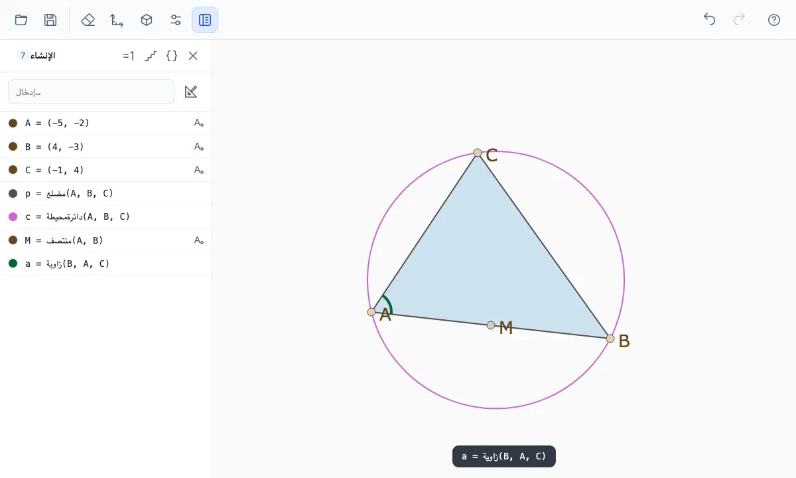

الواجهة

شريط الإجراءات
| الزر | الوظيفة | |
|---|---|---|
| فتح |
.dgo، .dgp،
.ggb
|
|
| حفظ | بصيغة .dgo |
|
| ممحاة | إخفاء عناصر أو إظهارها (الممحاة) | |
| المحاور | المحاور والشبكة؛ في الأبعاد الثلاثة، ثلاثي السطوح والأرضية | |
| عرض ثلاثي الأبعاد | الانتقال إلى الفضاء أو العودة إلى المستوى (الأبعاد الثلاثة) | |
| الخصائص | اللوحة الجانبية (الخصائص) | |
| الإنشاء | لوحة الإنشاء | |
| تراجع، إعادة | Ctrl Z، Ctrl Shift Z أو Ctrl Y | |
| دليل الاستخدام | يفتح الدليل بلغة DocGeo في علامة تبويب جديدة |
في الوسط، تعرض منطقة السياق اسم العنصر المحدَّد وإجراءاته.
لوحة «الإنشاء»
-
سطر لكل عنصر، بترتيب الإنشاء:
M = منتصف(A, B). ويمكن تعديل كل سطر (إعادة التعريف). - الدائرة الصغيرة في بداية السطر تخفي العنصر أو تظهره؛ و في نهاية السطر يظهر اسمه.
- الترويسة: عدد العناصر، القيم، خطوة بخطوة، برنامج جديد.
- سطر الإدخال «إدخال…» وزر قائمة الأدوات.
- مرور المؤشر على سطر يُبرز العنصر، والعكس بالعكس.
الإرشاد
تبيّن الفقاعة أسفل الشكل ما هو منتظر («حدّد نقطة»)، والسطر الذي ستكتبه الأداة، والأخطاء باللون الأحمر. وعلامتها ✕ تترك الأداة الحالية.
التنقل
| الإجراء | الإيماءة |
|---|---|
| تحريك العرض | سحب مكان فارغ؛ الزر الأيمن في أي مكان |
| التكبير والتصغير | عجلة الفأرة أو لوحة اللمس، حول المؤشر |
| تدوير شكل ثلاثي الأبعاد | الزر الأيمن، أو إصبع واحد في مكان فارغ |
| المنظور، الأرضية (الأبعاد الثلاثة) | P، S |
الزر الدائري في الزاوية السفلية، الظاهر عندما يحوي الشكل تحريكات، يوقفها مؤقتًا أو يعيد تشغيلها.
التراجع
كل تعديل خطوة في مكدس واحد: الإنشاء، الحذف، التحريك، النمط، ضبط المَعلم، الانتقال إلى الأبعاد الثلاثة. أما تكبير العرض وتحريكه وتدويره فليست خطوات.
اللوحات
- تُسحب حافتها الداخلية لتغيير حجمها؛ والنقر المزدوج يعيد العرض الافتراضي.
- تحت 900 px من العرض، تُفتح لوحة واحدة فقط في كل مرة؛ وعند 600 px أو أقل، تبدأ لوحة «الإنشاء» مغلقة، وتغطي الخصائص الشكل، ويغلق اختيار أداة اللوحات.